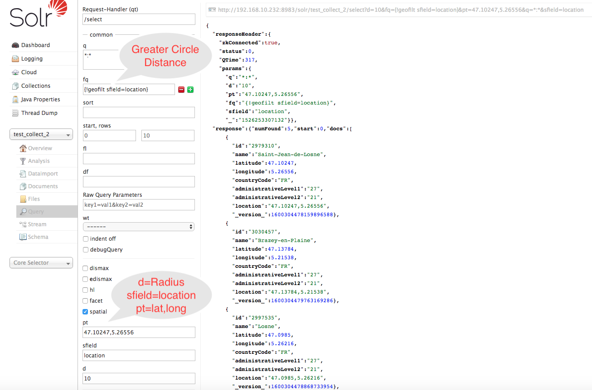
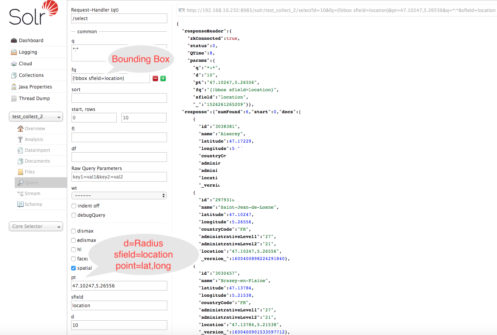

Project Description & Technology Stack
- The purpose of this project is to do the POC to ingest and index data for easy search.
- It has support for geo spatial search SpatialSearch
nearest neighbors or full-text by name.
- Apache Spark is used for distributed in memory compute ,
transform and ingest to build the
pipeline.
- Apache Solr is used for storage and indexing can be
configured in cloud mode (Multiple Solr server servers) can be easily scaled up by increasing server
nodes.
- Apache Spark has support for various sources and sinks such as read and write from JDBC, Kafka , S3
and HDFS etc.
Pipeline Description
- The Apache Solr collection (table name sql equivalent) can be configured with shards (no of
partitions) and replicas (fault tolerance)
- The requirement to handle schema evolution can be done by Solr Managed
Schema Configuration
- The id attribute which is derived from geonameid will take care of updating the
collection for future updates and schema evolution as describe above.
- We can store binary data Binary Data
Store such as Shape Files into Solr Document.
- We can also convert shape file into GeoJSON format and then ingest it into Solr for future
processing and updates.
Search By Greater Circle Distance

Search By Bounding Box
